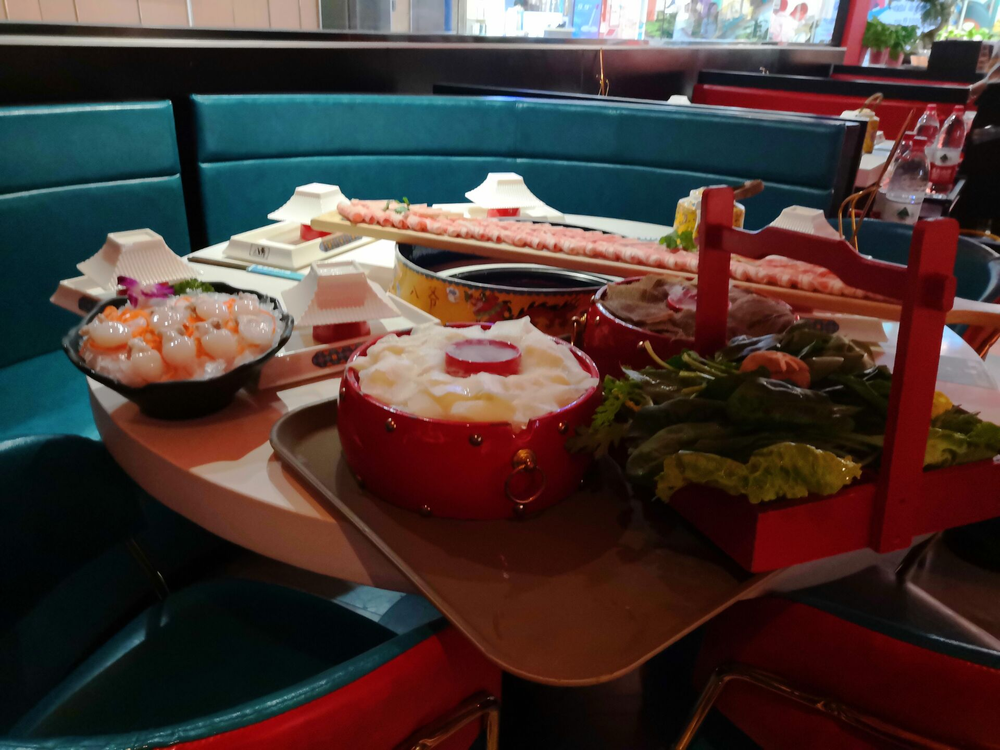

不想干活所以随便写点东西，一直写了4天才发出来
条评论说到底还是条懒狗
1号3号和初中的hxd出去胡吃海喝，在karaoke合唱了一些经典曲目，包括但不限于薔薇より美しい、Never Gonna Give You Up、届かない恋。

恰肉还是爽啊
4号又和高中同学出去剧本杀，跑了一个又混乱又狗血的本子，4个半小时，我受不了力，最后全员自爆才结束了游戏。
工作方面的事
上个月要交给CS的东西才刚刚开了一个头。干活是不可能干的，这一个月基本上都是在摸鱼，OSlab的进度落下了，问题求解的Lab也是，OOP根本学不会。
与此相对的，上个月净在整一些不太有用的东西，比如blog，比如gitlab（开了仓库，但是却不上传代码，xswl），再比如聊天室（危）。
虽然看起来弄了不少东西，但都不太正经。而且说实在的，搞这些东西还是在逃避真正重要的任务。就算是认真地做了重要的事情，也不会没有时间来搞定这点小事。
世界上只有一种英雄主义，就是工作压到双膝了，水淹到脖子了，还能抓紧时间摸个鱼。
关于意识形态
主要进展有两个，
一是弄清楚了，在实现自由解放的路上，极权作为手段的重要性。极权终会在自我否定中消灭。
二是看未师的视频，确定了自己对性别的态度。以前我也是持有类似的想法的，但是被搞对立的人整得有些动摇。这次听取了一个理论上的解释，使我自己信服了这件事。
【性的政治学】男权主义必然失败：“只有一种性别存在”——性多元主义与女性主义的联合之路
大意：
只有一种性别：+
死硬的男权主义者：认为自己的性别认同有形而上的依据，却以形而下的“阳具”作为实物载体，并且依托这个形而下的载体，划分出Masculine及其对立面Femiline，要求Femiline配合其形成这样的性别认同。
具体的体现：女性承担审美对象的功能。
为什么会有女权：女性的审美对象是女性本身，自我产生性别认同。
虚假的女权：把认同双方换个位置，继续玩这个荒谬的游戏。
真正的女权主义者：+
怎么做：拉拢不是“死硬的Capitalist”，让他们也成为审美的对象。
再说回自身
差点想磕提升专注力的药。但是朝葵姐和我说这玩意会成瘾，而且还不如早睡早起建立身体机制来的靠谱，毕竟精力是不可能凭空跑出来的。这是很有道理。
回想起来其实这学期，一没怎么喝酒，二根本就没有喝过咖啡，三也没太喝过Monster。确实有可能是上个学期留下来的一点后遗症。。当然现在是要保持比较健康的状态了，不能这么年轻的时候就没有精神。
这学期其实本来是想到教室学习的，但是不知道我的大脑出现了什么问题。我感觉这次不能归结于单纯懒，应该找点更加深层次的原因才行。
原因分析
我们先来看一下5.3-5.5的手机屏幕时间统计信息：
QQ：7小时11分钟
twitter：之前卸掉了所以没显示，但是应该和QQ用的时间差不多久
bilibili：4小时31分钟
知乎：1小时49分钟
国际象棋：1小时26分钟
微信：1小时3分钟
Tape：这个居然有40分钟，但是已经没有人给我发过问题了，感觉匪夷所思
其实这些说是3天，可以说是两天。因为我是在5.5的上午写到这里的。现在由于通宵有一点小晕。。
事情就很明显了，主要问题就是水群刷推。这些是比较表面的。
具体到我到底看了点什么，包括以下：
1、qq主要水求问题解和20级匡院的群，主要话题是数码、摸鱼、ghs、政治
2、twitter则主要是看一些政治话题，另外搞点hs
问题主要是政治看得有点多。但是看完了以后学到了什么呢？我认为在经过中推圈几轮翻滚之后，对我有益的信息应该变少了。接下来应该主要以未明子的哲学视频为主，完善政治哲学方面的知识。
另外就是，水的很多数码、技术上面的事，其实根本就是同义反复（），所以尽量不要去跟这些话题。
到这里，还是非常的现象。我为什么会不停地看这些，但是根本不干活呢？
太jb烦了 编程Lab令人头疼是真的。所以一直难以开始动工就是了。然后就落下的比较多了。
再往深入想一想，是不是根本就没有什么学习的动机？没有一点紧迫感是最要命的。近如现在是期中考试之前，我还是拿不出什么干劲来，甚至在考试前倒数第二夜通宵而什么都没有干。这种东西一旦松懈了，真的保不准什么时候才能把自己拉回正轨。
我给出的一点临时性的解决方案：
一是不用手机刷推特了。也不要再水群了，每天在20级群里面发个图就遁了。
二是期中考试过后就要好好睡觉，建立身体机制来保持较为良好的精神力。
- 这可一点都不简单。有的时候自己想搞东西搞上头了，但是也要收住。我们在哲学上说，有限性是一个非常powerful的东西，甚至资本主义的秩序都是建立在各种有限性上的。
三是为了免受各种消息的打扰，少发点动态吧，省得几秒就上去看一眼。。
一些长期性的东西：
一是多给自己上上紧箍咒。你难道没看到，五一出去玩的时候，wsy还在复习免疫学么？这样放松对自我的要求，怎么好意思待在南大呢？
二是要坚持哲学的学习。一方面审视自己，找出自身有什么毛病；另一方面坚定思想信念，获得精神上的动力。
三是，做任何事情都不要懒散；不要有一点不舒服就开始休息，要拿出顽强的意志力。多想想自己高考那阵子是怎么拼的，为什么现在不行？不要拿自己的年龄增长来说事，多鞭策自己。
四是要给自己创造良好的工作环境。有任何不舒服的地方短期要忍，但是长期的阻力不可估量。要多多改善环境，这才能保证高效。
比如，我现在虽然在打这段文字的时候感到有些疲倦，很想睡觉，但是还是能够坚持下来。不要一感到困就去睡觉，而是要和睡意的敌人搏斗。一上阵就缴械，感觉自己就不配叫合格的左翼。谨防在对待自己的事情的时候就变成右倾机会主义垃圾。
<EOF>